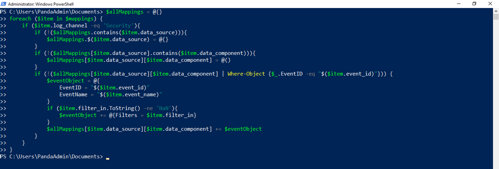
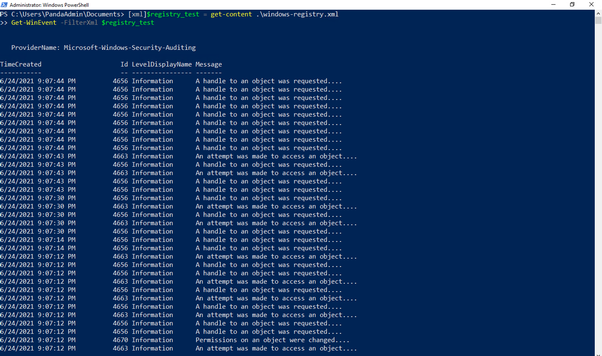

OSSEM Detection Model: Leveraging Data Relationships to Generate Windows Event XPath Queries
In this blogpost, we will introduce the OSSEM Detection Model project and show you how to use it to create Windows Event XPath queries. These XPath queries can then be used to improve your data collection strategy.
Prerequisites
We highly recommend reading the following blog post about OSSEM Data Dictionaries (DD): OSSEM Data Dictionaries: Correlating Security Telemetry. That should provide some context about the project.
OSSEM Detection Model
What is OSSEM?
The Open Source Security Events Metadata (OSSEM) is a community-led project that focuses primarily on the documentation and standardization of security event logs from diverse data sources and operating systems. Security events are documented in a data dictionary (DD) format, and they can be used as a reference while mapping data sources to data analytics used to validate the detection of adversarial techniques. In addition, the project provides a common data model (CDM) that can be used for data engineers during data normalization procedures to allow security analysts to query and analyze data across diverse data sources. Finally, the project also provides documentation about the structure and relationships identified in specific data sources to facilitate the development of data analytics and adversary behavior representation from a data perspective. These relationships are stored under the detection model (DM) section of the project.

What are Data Relationships?
Data relationships are structures that can help us describe and represent actions and behaviors (group of related actions) that can be performed within a network environment. The OSSEM relationships are stored in an easy to consume yaml format. Here is an example of a relationship that describes the action of a user requesting access to a file:
name: User requested access to File
contributors:
- Jose Rodriguez @Cyb3rPandaH
- Roberto Rodriguez @Cyb3rWard0g
attack:
data_source: File
data_component: file access
behavior:
source: user
relationship: requested access to
target: file
security_events:
- event_id: 4656
name: A handle to an object was requested.
platform: Windows
audit_category: Object Access
audit_sub_category: File System
log_channel: Security
log_provider: Microsoft-Windows-Security-Auditing
filter_in:
ObjectType: File
references:
- https://docs.microsoft.com/en-us/windows/security/threat-protection/auditing/event-4656
notes:
- 'Event 4656: This event generates only if object’s SACL has required ACE to handle specific access right use.'
What metadata is provided by the OSSEM DM project?
-
ATT&CK mapping: The data sources piece of the MITRE-ATT&CK framework has been updated recently, and it now includes more metadata such as
platform,collection layer,data componentsanddata relationships. You can find more information about it here. If an OSSEM relationship is part of ATT&CK data sources metadata, we provide the name of the data source and the data component. -
Behavior: The activity described by a relationship is represented by three elements,
source,relationshipandtarget. Source is usually the element that performs the main action in the relationship. For example,user->created->file. In this example,useris thesource,createdis therelationshipandfilethe target. There are cases where thesourcedoes not have atargetand there is because therelationshipis simply describing the state of thesource. For example,file modified. -
Security Events: Every relationship within the OSSEM-DM project is based on security events. Therefore, in this section of the yaml file, we share event logs that can be collected in you network environment. Also, we add a
filter_insection for each event to provide additional context for those events that might have multiple definitions depending on how they are created. For example, if we use Security event 4656 (A handle to an object was requested), we can tell that the values of theObjectTypefield can reference different objects such asfile,windows registry key, and evenprocess.
How can we define data relationships?
There are three basic steps that you can follow to define a relationship:
- Identify sources of data
- Identify data entities
- Identify relationships among data entities
a) Identify sources of data
We would start by choosing event logs that have been collected in our network environment. After that, we would try to understand the context behind these events, and check if we have already documented them somewhere. Here is where data dictionaries are very useful because they can expedite the research process. As mentioned before, the OSSEM project has a data dictionaries component that you can use as a reference. For the purpose of this section, let’s use event 4656 as an example. The image below, is the YAML representation of the event) in the OSSEM DD project:
title: 'Event ID 4656: A handle to an object was requested'
description: This event indicates that specific access was requested for an object.
The object could be a file system, kernel, or registry object, or a file system
object on removable storage or a device.
platform: windows
log_source: Microsoft-Windows-Security-Auditing
event_code: '4656'
event_version: '1'
event_fields:
- standard_name: user_logon_id
standard_type: TBD
name: SubjectLogonId
type: HexInt64
description: hexadecimal value that can help you correlate this event with recent
events that might contain the same Logon ID
sample_value: '0x4367b'
- standard_name: object_type
standard_type: TBD
name: ObjectType
type: UnicodeString
description: The type of an object that was accessed during the operation.
sample_value: File
- standard_name: object_name
standard_type: TBD
name: ObjectName
type: UnicodeString
description: name and other identifying information for the object for which access
was requested. For example, for a file, the path would be included.
sample_value: C:\Documents\HBI Data.txt
references:
- text: MS Source
link: https://github.com/MicrosoftDocs/windows-itpro-docs/blob/master/windows/security/threat-protection/auditing/event-4656.md
tags:
- Object Access
- Audit File System
- Audit Kernel Object
- Audit Registry
- Audit Removable Storage
b) Identify data entities
After understanding the context provided by an event log, we can categorize the metadata that it provides. For example, in event 4656, there is information about a user requesting access to an object. These two elements identified in the event are what we call entities and as we also mentioned before, an object can represent multiple things. Therefore, we can easily document more than 2 entities in this event.
c) Identify relationships among data entities
Based on the previous section, we can now identify the activity that connects our entities. The main entity performing the action would be the source while the other one is the target. In event 4656, the user is the source meanwhile file, Windows registry, and process would be considered targets. Finally, the action of requesting access would be the relationship.
What Can We Do with All this Information?
There are several things you can do with the research shared through OSSEM DM. The example we are covering in this post is related to the creation of Windows Event XPath queries to create custom filters and explore Windows security events. You might be asking yourself how this is possible from YAML files. We carefully worked on the schema of each relationship in the project to allow the output of the research to be in different formats. For example, XML.
Can’t You Filter Events via Event Viewer?
Yes, but there are some limitations when trying to do it all only via the main UI filters. There are some additional options that could help you to customize your searching. Let’s walk through an example of how to filter events via Event Viewer:
a) Exploring Events via Event Viewer
If you open Event Viewer and go to Windows Logs > Security, you can see different event logs such as 4688, 4656, and 5156.
b) Filtering relevant telemetry
If you did not know, when you select the option to filter the current log, there are two ways to do this. One is named Filter and the other one XML. When you use the Filter option, the application will automatically create an XPath query that you can see if you switch the filter option to XML. Let’s use this basic filter to only show events of EventID 4656. The difference between Filter and XML is that with XML we have more freedom to search for patterns in the event that go beyond the EventID, Event Level, Task Category and even Event Sources. With XML, you can access the EventData node of the XML representation of the security event.
Create XPath Queries Mapped to MITRE ATT&CK
As mentioned before, if we want to filter Windows Security events using a more complex logic, we would use XPath queries. Let’s use all the relationships that we have already mapped to the MITRE-ATT&CK project, translate them to XML documents, validate the search patterns and export XPath queries all via PowerShell.
In OSSEM DM, we programmatically create multiple files as part of the use cases we cover by processing every single relationship in YAML format. As mentioned before, we map everything to ATT&CK and we save the output as JSON and YAML files. For this post, we are going to use the JSON one.
a) Download relationships mapped to ATT&CK
- Open PowerShell with Administrator rights.
- Set the current directory (PowerShell session only) by running the following code.
[Environment]::CurrentDirectory=(Get-Location -PSProvider FileSystem).ProviderPath
- Set the url to the raw json file within the OSSEM DM GitHub repository.
$uri = "https://raw.githubusercontent.com/OTRF/OSSEM-DM/main/use-cases/mitre_attack/techniques_to_events_mapping.json"
- Initialize a Web Client.
[Net.ServicePointManager]::SecurityProtocol = [Net.SecurityProtocolType]::Tls12
$wc = new-object System.Net.WebClient
- Download the JSON file.
$wc.DownloadFile($uri, "techniques_to_events_mapping.json")
- Read the JSON file as an Array and validate it was downloaded correctly by selecting the first object.
$mappings = Get-Content .\techniques_to_events_mapping.json | ConvertFrom-Json
$mappings[0]

b) Create XML query files
- Extract the metadata within the JSON file to a dictionary
$allMappings = @{}
foreach ($item in $mappings) {
if ($item.log_channel -eq 'Security'){
if (!($allMappings.contains($item.data_source))){
$allMappings.$($item.data_source) = @{}
}
if (!($allMappings[$item.data_source].contains($item.data_component))){
$allMappings[$item.data_source][$item.data_component] = @()
}
if (!($allMappings[$item.data_source][$item.data_component] | Where-Object {$_.EventID -eq "$($item.event_id)"})) {
$eventObject = @{
EventID = "$($item.event_id)"
EventName = "$($item.event_name)"
}
if ($item.filter_in.ToString() -ne 'NaN'){
$eventObject += @{Filters = $item.filter_in}
}
$allMappings[$item.data_source][$item.data_component] += $eventObject
}
}
}

- Create XML files for each ATT&CK data source. Indeed, the name of each XML file will be the ATTCK data source mapped on each relationship.
foreach ($ds in $allMappings.Keys){
$fileName = -join (($ds -replace " ","-").ToLower(), '.xml')
$StringWriter = New-Object System.IO.StringWriter
$XmlWriter = New-Object System.XMl.XmlTextWriter $StringWriter
$xmlWriter.Formatting = "indented"
$xmlWriter.Indentation = 2
$xmlWriter.IndentChar = ' '
$xmlWriter.WriteStartDocument()
$xmlWriter.WriteStartElement("QueryList")
$xmlWriter.WriteComment("ATT&CK Data Source - $ds")
$Counter = 0
foreach ($dc in $allMappings[$ds].Keys) {
# Create query element
$xmlWriter.WriteStartElement("Query")
$xmlWriter.WriteAttributeString("Id", "$Counter")
$xmlWriter.WriteAttributeString("Path", "Security")
$xmlWriter.WriteComment("ATT&CK Data Component - $dc")
# Create query strings
$query = ""
$leftover = @()
foreach ($event in $allMappings[$ds][$dc]){
$xmlWriter.WriteComment("$($Event.EventID) - $($Event.EventName)")
if ($Event.Filters){
$leftover += $Event
}
else {
$query = -join ($query, " EventID=$($Event.EventID) ")
if (!($allMappings[$ds][$dc][-1]['EventID'] -eq $($Event.EventID))){
$query = -join ($query, "or")
}
}
}
if ($allMappings[$ds][$dc].Count -ne $leftover.Count){
$query = $query.Trim()
$query = -join ("*[System[(", $query, ")]]")
if ($leftover.Count -ne 0){
$query = -join ($query, ' or ')
}
}
# Process leftover
if ($leftover){
foreach ($l in $leftover){
$query = -join ($query, "(*[System[EventID=$($l.EventID)]] and (")
foreach ($f in $l.Filters) {
$key = $f | get-member -MemberType NoteProperty | select -expandproperty Name
$query = -join ($query, "(*[EventData[Data[@Name='$($key)']='$($f.$key)'")
if (!($l.Filters[-1] -eq $($f))){
$query = -join ($query, "]] or ")
}
else {
$query = -join ($query, "]])))")
}
}
if (!($leftover[-1] -eq $($l))){
$query = -join ($query, " or ")
}
}
}
# Create Select (query) Element
$xmlWriter.WriteStartElement("Select")
$xmlWriter.WriteAttributeString("Path", "Security")
$xmlWriter.WriteString("$query")
$xmlWriter.WriteEndElement() | out-null
$xmlWriter.WriteEndElement() | out-null
$counter += 1
}
# Write Close Tag for QueryList Element
$xmlWriter.WriteEndDocument() | out-null
# Finish The Document
$xmlWriter.Flush() | out-null
$StringWriter.Flush() | out-null
#Create File
$StringWriter.ToString() | out-file $fileName
$xmlWriter.Close()
}
- Validate the creation of
XMLfiles.
# Printing all the files in my current directory
ls
- Read the content of the XML file to validate its syntax (initial validation). Let’s use the
windows registrydata source as an example (Remember that, in case the name of the data source contained a blank space within its name, the code replaces the blank space with a-character. For example: user account –> user-account).
get-content .\windows-registry.xml
Test XPath Queries
As a final validation step, let’s run our XPath queries using EventViewer and PowerShell to validate its syntax.
a) Testing through EventViewer
- Copy the output of the command that we ran previously named
get-contentin theXMLEvent Viewer filter option and clickOK.
b) Testing through PowerShell
- Execute the XPath querry using the
Get-WinEventcommand.
[xml]$registry_test = get-content .\windows-registry.xml
Get-WinEvent -FilterXml $registry_test

C) Exporting XPath Queries
[xml]$Account = get-content ..\windows-registry.xml
$Account.QueryList.Query | ForEach-Object {-join ($_.Select.Path, '!', $_.Select.'#text') }
What else can we do with this XPath Queries?
Within the Open Threat Research (OTR) projects portfolio, you can find a project named Azure Sentinel To-Go. It allows you to expedite the deployment of an Azure Sentinel lab along with other Azure resources and a data ingestion pipeline to consume pre-recorded datasets for research purposes. One of the recent updates to its Windows data connectors allows the use of XPath queries to customize the collection of Windows Security events. We could use the previous section and the its output to help Azure Sentinel users by giving them an idea of how they can improve their data collection strategy based on the research behind the OSSEM DM project.

Creating Xpath Queries for Azure Sentinel**
Even though we were able to export XPath queries from the OSSEM DM project, we need to change the format a little bit to make it compatible with the APIs used to configure the new version of the Windows Security event data connector in Azure Sentinel.
You can use the following PowerShell code to aggregate all the .xml files that we created before from the JSON file in the OSSEM DM GitHub repository.
$allFiles = Get-ChildItem -Path *.xml
$AllDataSources = @()
$DataSource = [ordered]@{}
# Name of Data Source
$DataSource['Name'] = "eventLogsDataSource"
# Transfer Period
$DataSource['scheduledTransferPeriod'] = "PT1M"
# Streams
$DataSource['streams'] = @(
"Microsoft-SecurityEvent"
)
# Process XPath Queries
$DataSource['xPathQueries'] = @()
foreach ($file in $allFiles){
[xml]$XmlQuery = Get-Content -path $file
$queries = $xmlQuery.QueryList.Query
ForEach ($query in $queries){
$QueryString = "$(-join ($query.Select.Path, '!', $query.Select.'#text'))"
if ("$QueryString" -notin $DataSource['xPathQueries']){
$DataSource['xPathQueries'] += $QueryString
}
}
}
$AllDataSources += $DataSource
@{
windowsEventLogs = $AllDataSources
} | Convertto-Json -Depth 4 | Set-Content "ossem-attack.json" -Encoding UTF8

You can validate the generation of the JSON file by using the get-content function.
get-content .\ossem-attack.json
How Can We Use This File in Azure Sentinel?
For that, I recommed readhing the folling blog post written by Roberto Rodriguez (@Cyb3rWard0g) from the MSTIC R&D team.
Thank you! That’s it for today. We are working on more use cases to operationalize our researcher shared through the OSSEM project.
References
Subscribe to Open Threat Research Blog
Get the latest posts delivered right to your inbox